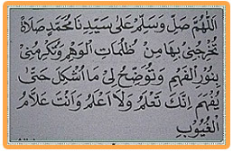

"Allahumma sholli wasallim 'alaa sayyidinaa Muhammadin sholaatan tukhrijunii bihaa min zhulumaatil wahmi, watukrimunii binuuril fahmi, watuwadhdhihu lii maa isykila hattaa yufhama innaka ta'lamu walaa a'lamu waanta 'allaamul ghuyuubi".
Artinya
Ya Allah, limpahkanlah rahmat dan salam kepada junjungan kita Nabi Muhammad SAW., yang dengan sholawat tsb. Engkau keluarkan aku dari kegelapan ragu-ragu dan berikanlah aku dengan sinar kefahaman dan karuniakan kejelasan kepadaku segala apa-apa yang aku merasa sukar/sulit, sehingga dapat dimengerti/difahami. Sesungguhnya Engkau Maha Mengetahui, sedang aku tidak mengetahui, dan Engkau mengetahui sesuatu yang gaib.
Fadhilah dan manfaatnya Sholawat ini
Barang siapa yang memperbanyak membaca Sholawat tersebut terutama sekali bagi siswa siswi atau mahasiswa ataupun siapa saja yang sedang menuntut ilmu, maka insya Allah akan dibuka pintu kecerdasan , kefahaman sehingga mudah mengerti terhadap ilmu yang dipelajari.
Wallahu A’lam